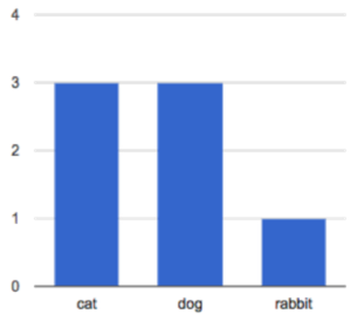
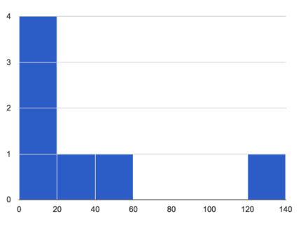

Students explore new visualizations in Pyret, this time focusing on the frequency of observations in their dataset. They learn how to construct and interpret Frequency Bar Charts and Histograms, experiment with these visualizations in a contrived dataset, apply them to their own research, and interpret the results.
Students create frequency bar charts using the animals dataset
Students create histograms using the animals dataset
Students create visualizations of frequency using their chosen dataset, and write up their findings
Standards and Evidence Statements:
Standards with prefix BS are specific to Bootstrap; others are from the Common Core. Mouse over each standard to see its corresponding evidence statements. Our Standards Document shows which units cover each standard.
6.SP.4-5: The student summarizes and describes distributions
Summarize numerical data sets in relation to their context, such as by: Reporting the number of observations, Describing the nature of the attribute under investigation, including how it was measured and its units of measurement, Giving quantitative measures of center (median and/or mean) and variability (interquartile range and/or mean absolute deviation), as well as describing any overall pattern and any striking deviations from the overall pattern with reference to the context in which the data were gathered, or Relating the choice of measures of center and variability to the shape of the data distribution and the context in which the data were gathered.
Data 3.1.2: Collaborate when processing information to gain insight and knowledge.
Collaboration is an important part of solving data-driven problems.
Collaboration facilitates solving computational problems by applying multiple perspectives, experiences, and skill sets.
Communication between participants working on data-driven problems gives rise to enhanced insights and knowledge.
Collaboration in developing hypotheses and questions, and in testing hypotheses and answering questions, about data helps participants gain insight and knowledge.
Collaborating face-to-face and using online collaborative tools can facilitate processing information to gain insight and knowledge.
Data 3.1.3: Explain the insight and knowledge gained from digitally processed data by using appropriate visualizations, notations, and precise language.
Visualization tools and software can communicate information about data.
Tables, diagrams, and textual displays can be used in communicating insight and knowledge gained from data.
Summaries of data analyzed computationally can be effective in communicating insight and knowledge gained from digitally represented information.
Transforming information can be effective in communicating knowledge gained from data.
HSS.ID.A: Summarize, represent, and interpret data on a single count or measurement variable
Represent data with plots on the real number line (dot plots, histograms, and box plots).
S-ID.1-4: The student uses data summary techniques to aid interpretation of a single count or measurement variable
plots on the real number line (dot plots, histograms, and box plots) to represent data
Length: 100 Minutes
Glossary:
categorical data: kind of data with a value that has a fixed number of possible values
frequency: how often a particular value appears in a data set
frequency bar chart: A bar chart in which each the length of each bar corresponds to the frequency of a particular value
histogram: A special frequency bar chart in which each bar counts the frequency of values appearing that belong to a certain bin
Materials:
Preparation:
Computer for each student (or pair), with access to the internet
Open your "Animals Dataset (w/Functions)" file. (If you do not have this file, or if something has happened to it, you can always make a new copy.)
Let’s look at an sample table taken from the animals-table...
name
species
age
pounds
"Sasha"
"cat"
1
6.5
"Boo-boo"
"dog"
11
123
"Felix"
"cat"
16
9.2
"Buddy"
"lizard"
2
0.3
"Nori"
"dog"
6
35.3
"Wade"
"cat"
1
3.2
"Nibblet"
"rabbit"
6
4.3
"Maple"
"dog"
3
51.6
What can we say about this table? How many rows and columns does it have? Are they categorical or quantitative? Could we talk about the mean, median or modes of some of these columns? Which ones?
Turn to Page 37 in your Student Workbook, and answer the questions you find there.
What was different about these questions? What did the charts at the bottom tell us? The questions were all about frequency. The first chart shows the frequency of different species in the table, and the second shows the frequency of certain weight-ranges.
Frequency Bar Charts
Overview
Learning Objectives
Students are introduced to frequency bar charts
Evidence Statementes
Product Outcomes
Students create frequency bar charts using the animals dataset
Materials
Preparation
Frequency Bar Charts(Time 20 minutes)
Frequency Bar Charts
The first chart is called a frequency bar chart. It uses the categorical data in a column as the labels, and then counts how often those categories show up in the table. In other words, it shows us the frequency with which each category appears in the table.
Here, we are looking at the species column, which contains categorical data. In this special kind of bar chart, we are computing the frequency with which each category occurs in our dataset. and that frequency relates to the length of each bar. Since there are 3 animals whose species is "cat", the bar for Cat extends to 3 marks long.
This works great for categorical data - there are only so many types of animals at our shelter! But what if we wanted to see a frequency of quantitative data, like the weights of each animal? There are so many unique weights in our table that we’d have a hundred different bars, all the same size! What we want is a way to group the values into bins, so all the animals weighing between 0 and 20 pounds are counted together, then the animals weighing 21-40 pounds, and so on.
Here is the contract for freq-bar-chart, followed by an example of how use it:
In the Interactions Area, type in the example to make a frequency bar chart of the animals, broken down by species. Are there more animals at the shelter that are female than male? Complete the Table Plan on Page 38.
Histograms
Overview
Learning Objectives
Students are introduced to histograms
Evidence Statementes
Product Outcomes
Students create histograms using the animals dataset
Materials
Preparation
Histograms(Time 20 minutes)
Histograms
The second chart is called a histogram. Histograms are like frequency bar charts, but they have a few important differences:
Frequency bar charts are for categorical data, but histograms are for quantitative data
The bars in a histogram are ordered according to the ranges of the bins
The size of the bins is adjustable
These differences are made possible because quantitative data can be compared - one bar can be said to be "greater than" another bar, and a value can be said to be "within" the range of a bin. For categorical data, neither of these is the case, so we use bar charts instead of histograms. Frequency bar charts are only for counting the frequency of categorical data. In this chart, the weights of all the animals are groups into bins. How big are these bins?
Each bin represents a range of 20 pounds.
Here is the contract for histogram, followed by an example of how use it:
In the Interactions Area, type in the example to make a histogram of the animals, broken down by weight into 20-pound bins. Then try playing with the bin-size. Is it useful to have a bin-size of 1? What about 100?
Debrief with your students, focusing on what it means to "choose a good bin size".
How long does it take for most animals to be adopted? Complete the Table Plan on Page 39.
Your Dataset
Overview
Learning Objectives
Evidence Statementes
Product Outcomes
Students create visualizations of frequency using their chosen dataset, and write up their findings
Materials
Preparation
Your Dataset(Time 30 minutes)
Your Dataset
How are is your dataset distributed? Create at least one frequency bar chart and one histogram to explore your dataset. If you’re looking at a particular subset of the data, make sure you write that up in your findings on Page 40.
Give students 5-10min to make their next set, and have them share back. Encourage students to read their observations aloud, to make sure they get practice saying and hearing these observations.
What did you find? Do you need to refine your dataset further, either by filtering or building a new column? Take 10-15min to deepen your analysis, and write up your findings on Page 40.
Closing
Overview
Learning Objectives
Evidence Statementes
Product Outcomes
Materials
Preparation
Closing(Time 15 minutes)
ClosingYou’ve now learned about a lot of different charts! How many can you name? When is it best to use a pie chart instead of a bar chart? What about a histogram instead of a frequency bar chart? Each chart is good for answering different kinds of questions, and Data Scientists know when to use each kind.
Turn to Page 41. Here you’ll find a set of questions about the animals dataset. For each question, draw a line to the kind of chart that would answer it best.